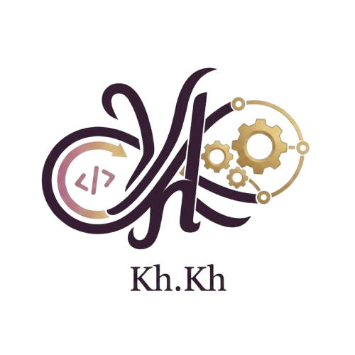

HTML
Semantic structure and accessible foundations
↗Engineering mind / creative vision
I'm Khadega Khaled — an engineering-minded creative designer and problem solver, building thoughtful digital experiences with precision and purpose.

PrecisionPORTFOLIO / 2026
31°12'N 31°21'EThe person behind the pixels
👋 Hello, I'm Khadega Khaled
Engineering Mind | Creative Designer | Problem Solver
I've always been driven by excellence. Being among the top students throughout my academic journey wasn't just about grades — it was a mindset.
That mindset led me to the Faculty of Engineering, where I discovered my true passion: the intersection of logic and creativity. Engineering taught me how to think, and programming taught me how to create.
Today, I'm a creative designer with a problem-solving superpower. I don't just design visuals — I design experiences that work. Every pixel I place, every color I choose, and every interaction I craft is backed by engineering precision.
“I build things that are beautiful because they work, and work because they're beautiful.”Let's create something amazing ↗
02 / TOOLKIT
The tools I'm shaping
A growing technical foundation,
guided by curiosity and precision.
Semantic structure and accessible foundations
↗Responsive layouts, Flexbox, and Grid
↗Current learning path for future interfaces
↗Logic, automation, and problem solving
↗Computational thinking and structure
↗Object-oriented programming foundations
↗03 / ARCHIVE
Selected explorations
Every project is a place to test an idea,
solve a problem, and learn something new.
A good idea starts somewhere
Have an idea, a question, or a project to discuss? I would be happy to connect.
Find me on LinkedIn ↗